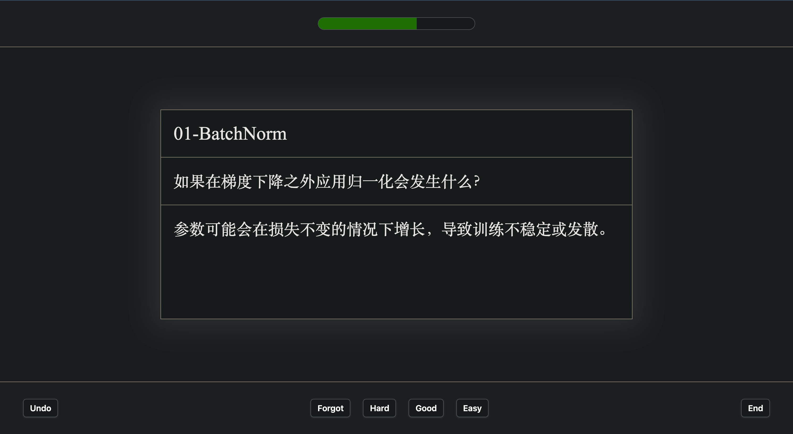
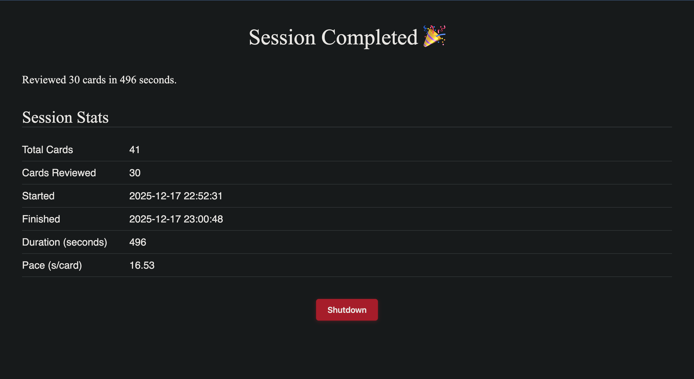

A local-first spaced repetition learning app built on plain Markdown files, FSRS scheduling, and content-addressable cards. Your data, your rules.


Cards are plain .md files. Edit them in any text editor.
No proprietary formats, no vendor lock-in.
State-of-the-art spaced repetition scheduler. Adapts to card difficulty, models memory decay curves, handles forgotten cards better than SM-2.
Cards identified by SHA-256 hash of their content. Auto-dedup, safe editing, Git-friendly tracking. Same content = same card.
Space to reveal, 1-4 to rate. Designed for flow — no mouse needed. Progressive enhancement: works without JavaScript too.
Clone, install, and start reviewing in under a minute.
Unix philosophy: small, composable tools around text streams. Markdown is source of truth; SQLite stores only scheduling ephemera.
Regex-based Markdown extraction. Supports Q&A cards and Cloze deletions.
FSRS implementation with stability, difficulty, and retrievability modeling.
SHA-256 content-addressable card identity. Normalized whitespace for robustness.
SQLite with parameterized queries. Stats, review history, per-deck aggregates.
AI card generation via DashScope (qwen-max). Paste text, get flashcards.
Flask + Jinja2 + Tailwind. Study, browse, stats, and generation in one interface.
Traditional flashcard apps lock your data in opaque formats. hashcards stores cards as plain Markdown files — editable anywhere, version-controlled with Git, scriptable with any language. Only scheduling state lives in SQLite, and that's rebuildable ephemera.